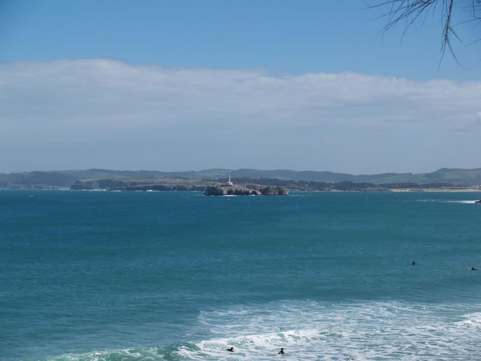

Encuentro en Santoña
Anterior
|
Inicio
|
Siguiente

Esta es la isla de Mouro, en la bocana del puerto de Santander. En la foto siguiente podemos comparar como fue el temporal que hubo en el Cantábrico